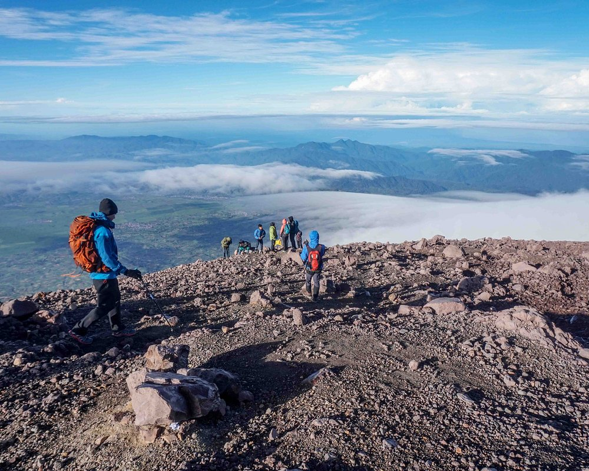

Gunung Kerinci
Gunung Kerinci (juga dieja dengan "Kerintji") adalah gunung tertinggi di pulau Sumatra dan gunung berapi tertinggi di Indonesia juga Asia Tenggara.
Baca Selengkapnya
Gunung Kerinci (juga dieja dengan "Kerintji") adalah gunung tertinggi di pulau Sumatra dan gunung berapi tertinggi di Indonesia juga Asia Tenggara.
Baca SelengkapnyaMuseum Siginjei Jambi merupakan museum yang menyimpan berbagai koleksi benda-benda bersejarah, benda seni tradisi serta sejumlah instalasi edukasi pewarisan budaya lainya.
Baca selengkapnyaTaman Hutan Kota Muhammad Sabki (THKMS) atau Ruang Terbuka Hijau Hutan Kota Muhammad Sabki adalah taman hutan kota di Kota Jambi yang merupakan gagasan dari Walikota Jambi terdahulu, Muhammad Sabki mantan Wali Kota Jambi periode 1993 - 1997. Bapak Muhammad Sabki menetapkan kawasan seluas 10 hektar sebagai hutan kota dengan keputusan Walikota Jambi No. 607 tahun 1995 tanggal 12 Desember 1995, Kemudian Tahun 2003 Pemerintah Kota Jambi Menambah Luas Taman seluas 1 hektare untuk keperluan areal parkir dan kantor sehingga luas THKMS kota Jambi menjadi 11 hektare.
Baca selengkapnyaRumah Batu Olak Kemang adalah rumah yang dibangun pada sekitar abad ke-18 oleh Pangeran Wirokusumo atau Sayyid Idrus Hassan Al-Jufri, arsitektur rumah ini terbilang unik karena memiliki tiga ciri khas yaitu gaya Eropa, gaya Cina, dan terakhir gaya Arab. bangunan ini terletak di Olak Kemang, di seberang Kota Jambi. Rumah ini juga merupakan jejak perkembangan dari Kesultanan Jambi.
Baca selengkapnyaDanau Kaco merupakan danau yang terletak di kabupaten Kerinci, Jambi. Tepatnya di desa Lempur, kecamatan Gunung Raya. Danau ini berada di kawasan Taman Nasional Kerinci Seblat (TNKS) yang merupakan situs warisan UNESCO. Danau kaco memiliki luas sekitar 90 meter persegi dan memiliki kedalaman yang belum diketahui. Secara geografis danau ini terletak di 101.540402 BT dan 2.330258 LS pada ketinggian 1229 mdpl.
Baca selengkapnya